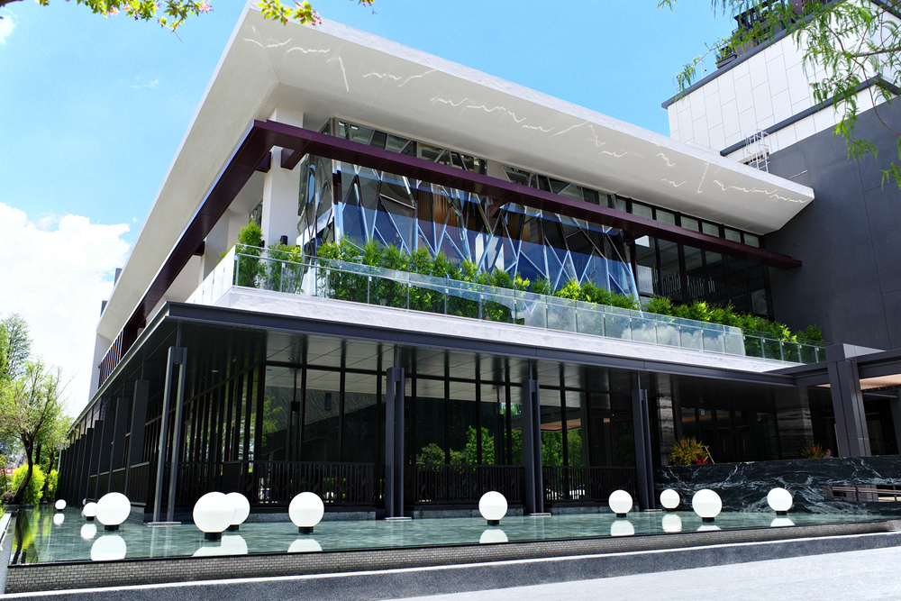

品牌理念
軒食堂成立於2019年，雖然是個規模不大的食品產業，但對於用料方面是十分的有信心。
軒食堂採用新鮮當地直送的肉類及海鮮類，另外蔬果也有合作及自家經營的蔬果園，品質
保證新鮮，100%無農藥，使饕客們吃的開心，也吃得放心。
地理位置
本店位於桃園市中壢區中央路1號，採西式建築方式，黑白相間的色調
給顧客們一種踏進門就可以感受到典雅、高級的感覺，在夜晚時，在餐
廳的燈光照射下，也會帶給顧客一番如同五星級餐廳外觀的視覺享受。
軒食堂成立於2019年，雖然是個規模不大的食品產業，但對於用料方面是十分的有信心。
軒食堂採用新鮮當地直送的肉類及海鮮類，另外蔬果也有合作及自家經營的蔬果園，品質
保證新鮮，100%無農藥，使饕客們吃的開心，也吃得放心。
本店位於桃園市中壢區中央路1號，採西式建築方式，黑白相間的色調
給顧客們一種踏進門就可以感受到典雅、高級的感覺，在夜晚時，在餐
廳的燈光照射下，也會帶給顧客一番如同五星級餐廳外觀的視覺享受。